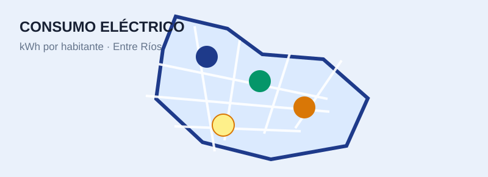
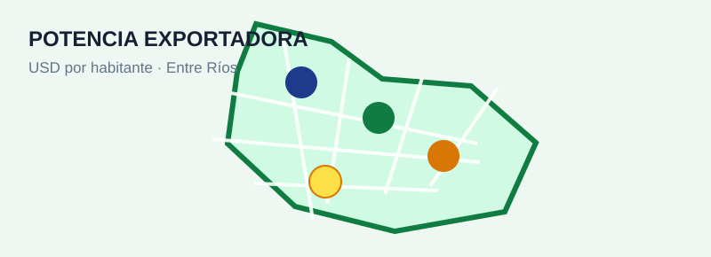
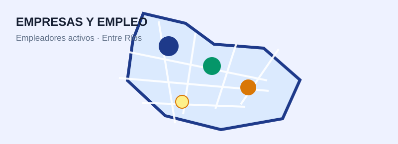
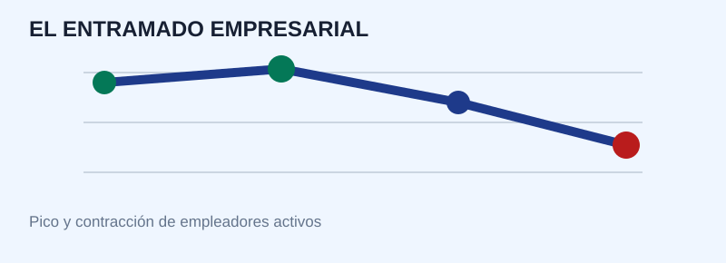
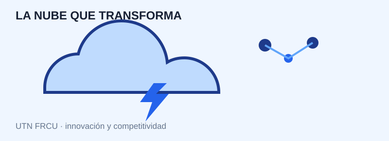
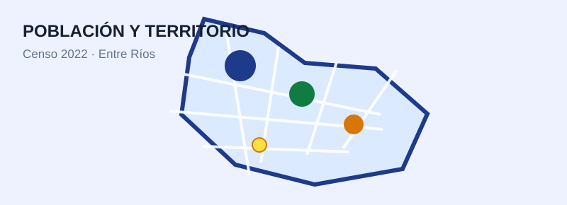
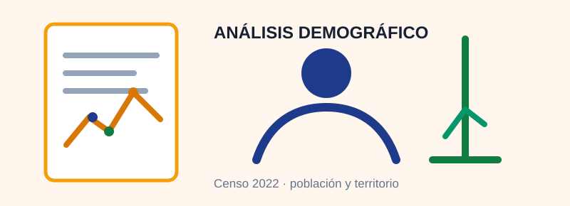
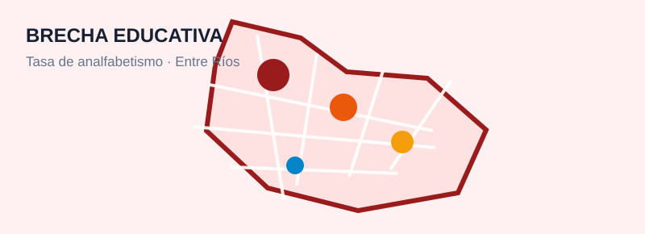
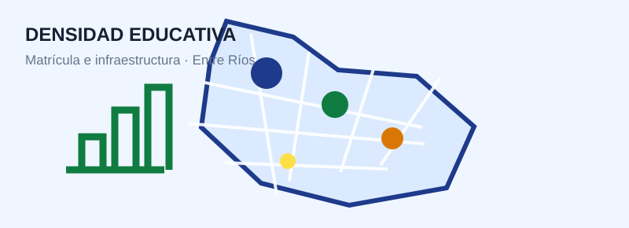

Mapa interactivo
Consumo eléctrico industrial y comercial per cápita
Consumo por departamento de Entre Ríos, con datos de población del Censo 2022 y promedio provincial.
Abrir mapa →
Estadísticas Entre RíosJoBen · datos para decidir
Portal de información
Mapas interactivos e informes para explorar indicadores territoriales, económicos y sociales de la provincia.

Consumo por departamento de Entre Ríos, con datos de población del Censo 2022 y promedio provincial.
Abrir mapa →
Intensidad económica y exportadora por habitante, con categoría y complejo agroindustrial principal.
Abrir mapa →
Densidad de empleo privado registrado, empleo público y ratio entre ambos por departamento.
Abrir mapa →
Evolución reciente de empleadores activos, impacto en las Mipymes y señales para el trabajo formal.
Leer informe →
Presentación del GIDIC sobre tecnología, innovación y competitividad desde la UTN FRCU.
Leer informe →
Población, densidad, crecimiento intercensal y cabecera principal por departamento.
Abrir mapa →
Lectura territorial del Censo 2022 sobre concentración urbana, densidad y dinámica intercensal.
Leer informe →
Porcentaje de analfabetismo, personas afectadas y población evaluada por departamento.
Abrir mapa →
Matrícula, establecimientos, carreras superiores y alumnos por establecimiento.
Abrir mapa →La portada organiza los recursos para que cada nuevo informe tenga un lugar claro y fácil de compartir.
Portal creado el 1 de noviembre de 2026. Los datos y las fuentes se detallan dentro de cada recurso.